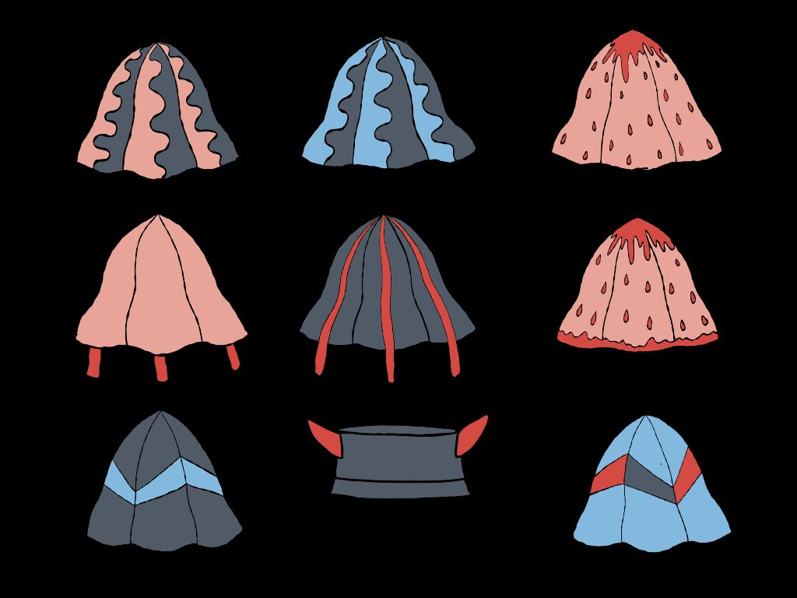
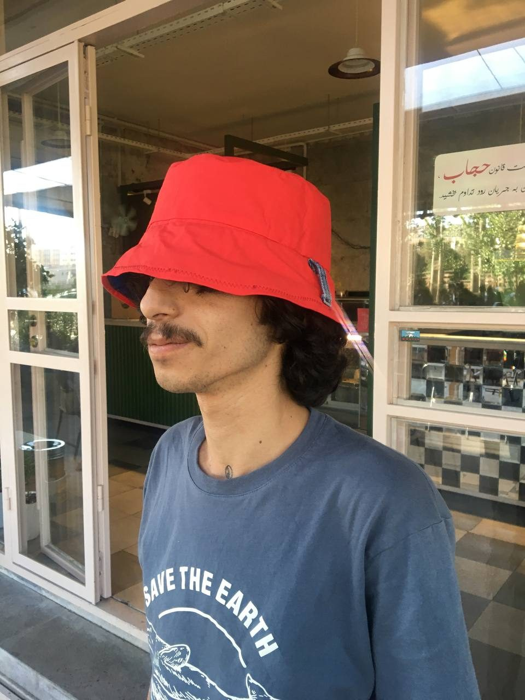
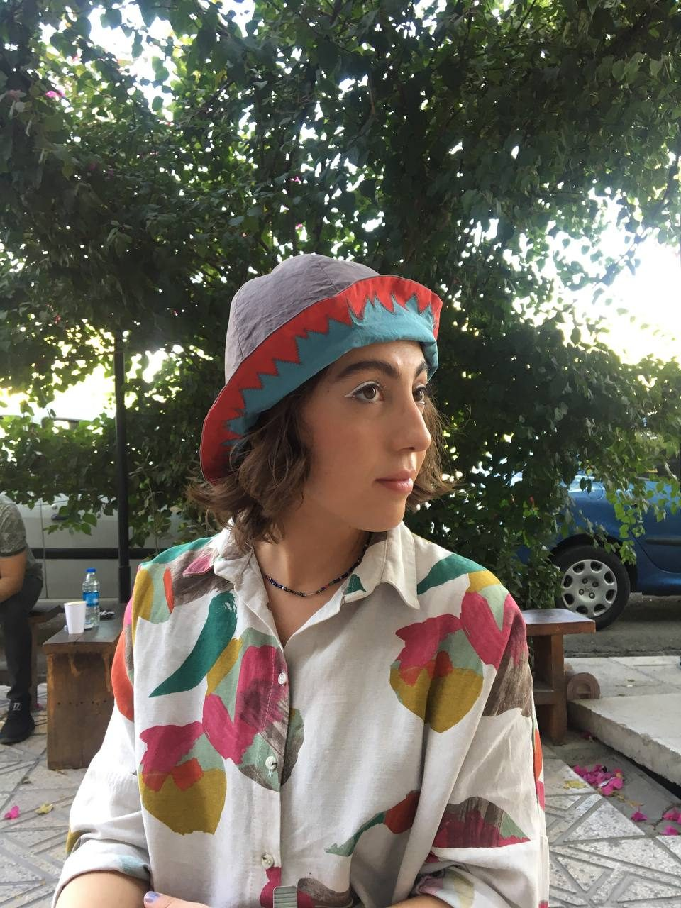
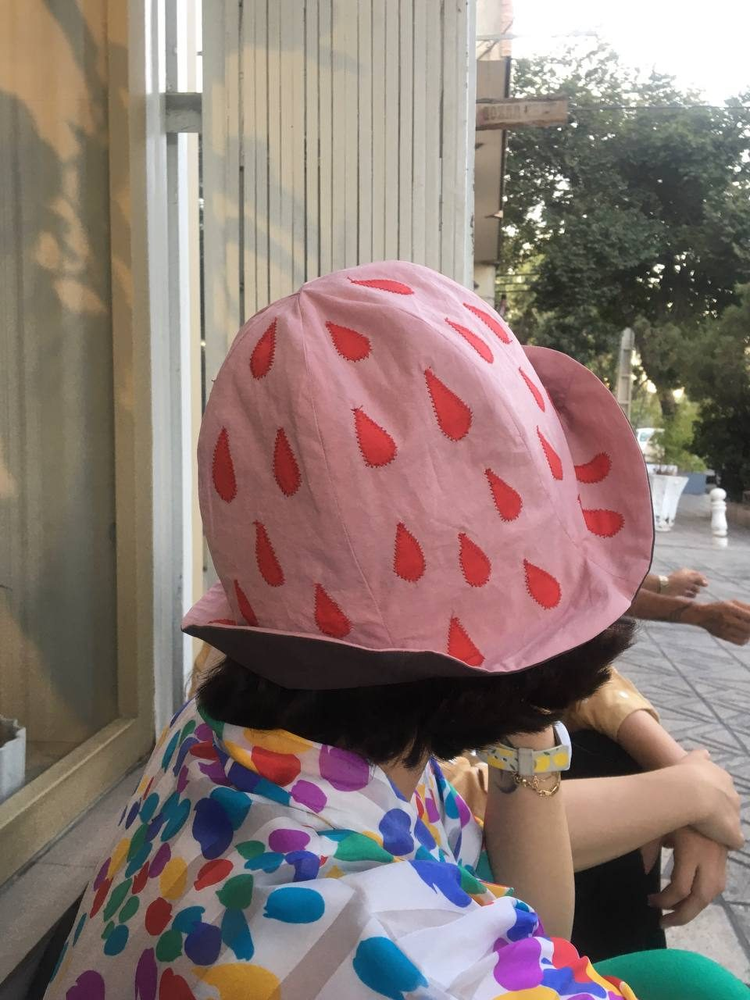
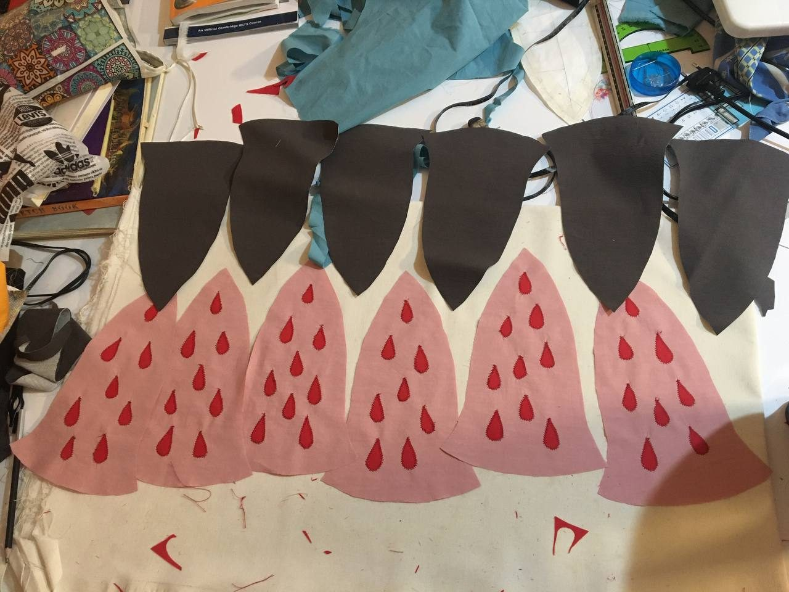
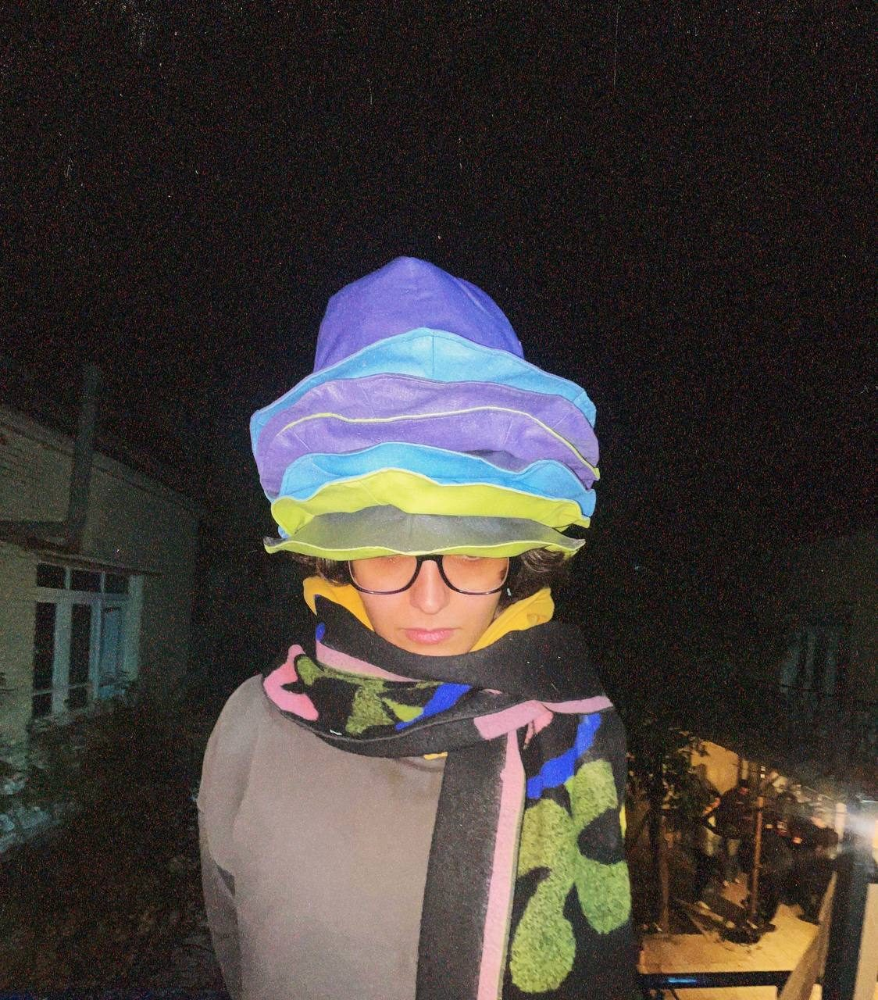
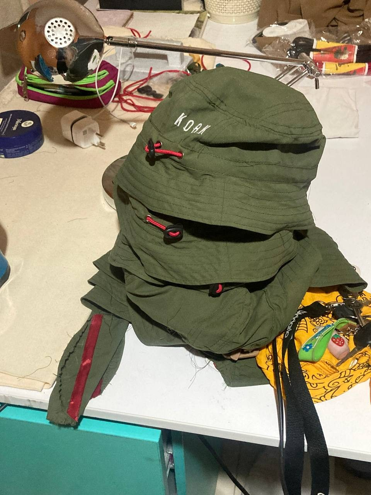
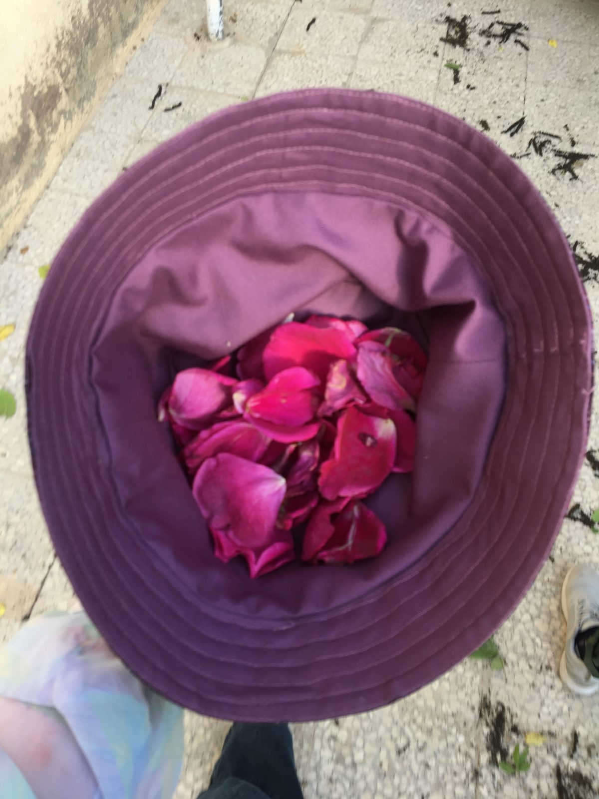
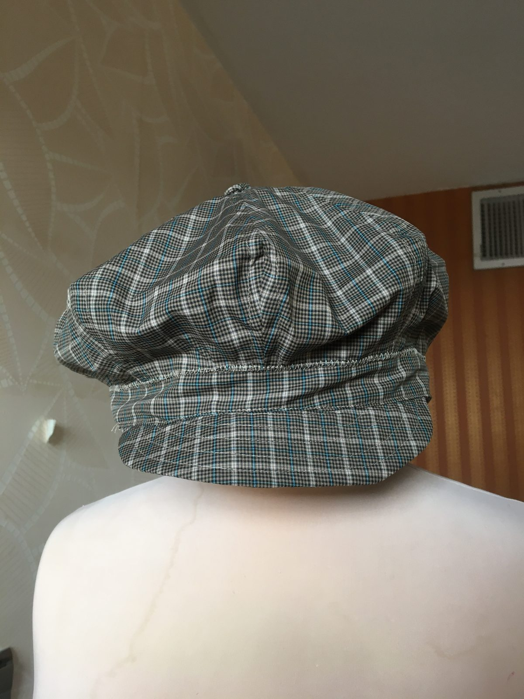
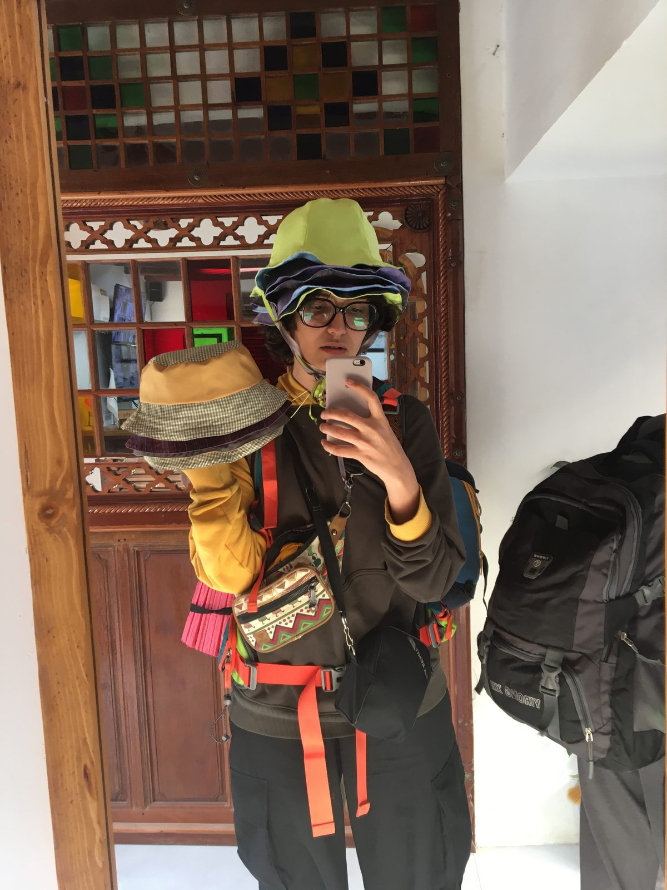

Kolah means hat in Farsi — and 100Kolah set out to make a hundred of them, each with its own personality: dripping brims, strawberry seeds, rose-petal linings. Shown at Balkon Fashion Event, The Rakht and Koocheh Music Festival, Tehran.

Digital illustration sheet of nine bucket hat designs in pink, blue and redModel wearing a sky-blue bucket hat with dark blue drip applique

Model wearing a bright red bucket hat, seen from the sideTeal bucket hat with drip applique in progress on the sewing table

Portrait of a model in a strawberry-patterned beret and colourful shirtPink strawberry applique pieces being cut on the worktable

Model at a sunny window wearing a pink strawberry bucket hat

Brown and red petal applique pieces laid out on fabricHand holding up a turquoise and brown hat in the courtyardModel relaxing in an armchair with a pink hat tipped over the face

Model at night wearing a tall stack of colourful hats

Stack of olive-green bucket hats on the sewing tableSewing machine needle lit in warm amber light while stitching a hat

Purple bucket hat turned upside down and filled with rose petals

Grey plaid flat cap photographed on a white backgroundFitting session with hats and orange straps in a traditional interior

Second fitting shot with hats and orange straps in a traditional interior